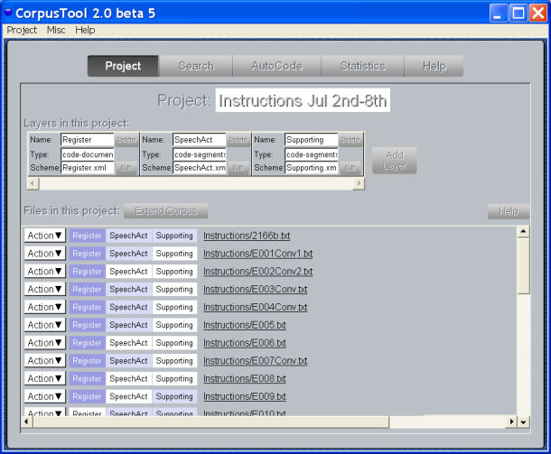
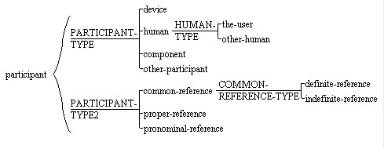
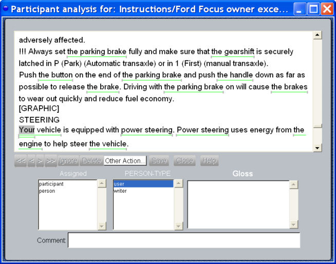
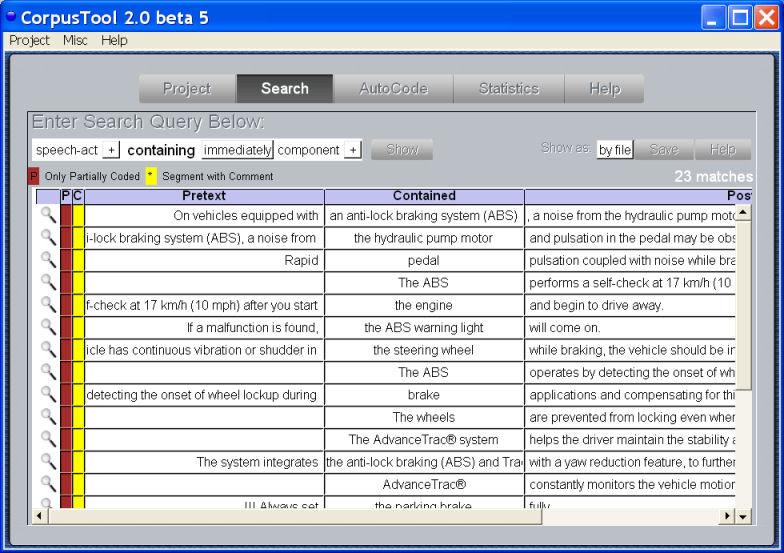
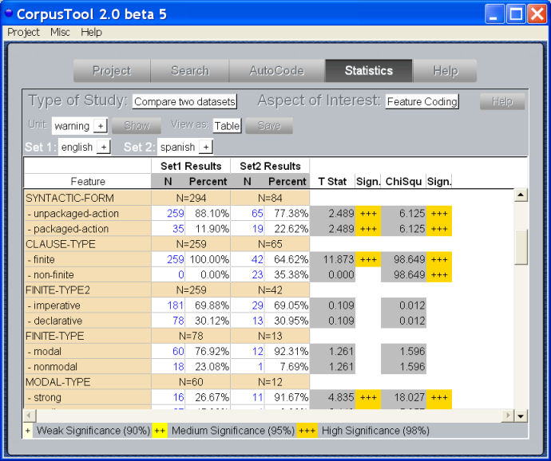
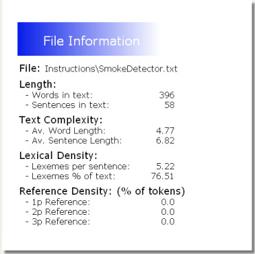

|
The UAM CorpusTool is a state-of-the-art environment for annotation of
text corpora. So, whether you are annotating a corpus as part of a
linguistic study, or building a training set for use in statistical
language processing, this is the tool for you.
Version 2.8.7 now available! (Dec, 2011): (fixes bugs)
NOTE: Image Annotation has now been spun off as a separate application. See here.
Powerful Annotation Tool
- Annotation of multiple texts using the same annotation
schemes, of your design.
- Annotation of each text at multiple levels (e.g., NP,
Clause, Sentence, whole document).
- Searching for instances across levels, e.g., finite-clause
containing company-np, or future-clause in introduction.
- Comparative statistics across subsets, e.g., contrasting
conversational patterns used by male and female speakers.
- All annotation is in stored in XML files, meaning that
your annotations can more easily be shared with other applications.
- We use "stand-off" XML: the annotation files do not
contain the text, just pointers to the text. This allows for multiple
overlapping analyses of the same text, not so easy in standard XML.
Easy to Use
UAM CorpusTool has been crafted to make the text annotation
experience simple.
The Project Window is where you manage each project.
It is used to add or remove layers from your study, to add or remove
files
to the corpus, and also to open each document for annotation
at whatever layer.

Creating the annotation scheme is simple with the
graphical scheme editor, allowing
cross-classification as well as sub-specification of features. Any
change in the scheme (e.g., deleting or renaming a feature)
automatically updates all the annotation files in the project.

Annotating text segments is as easy as swiping some
text (click
down and drag to end of segment) and then indicating the features that
are appropiate for that segment. Alternatively, the user can nominate
that all files should be pre-segmented into sentences, and advance
through the text coding each sentence. Later we will be adding
automatic identification of named entities, and noun phrases.

Searching your corpus is via the Corpus Search
interface. Complex queries are possible, using features
at different annotation levels (below we show NPs coded as "device" in
documents annotated as "english"). You can also search
for segmments CONTAINING another segment type, or containing one or
more words of text. Concordance search is also possible, e.g.,
"sentence containing "be@ @participle" will find
all segments identified as sentence which contain a be verb followed by
a participle verb (passive structures basically).

Statistical Studies:
UAM CorpusTool supports a range of statistical analyses of your corpus,
revealing patterns that the eye might miss. For instance, in the small
study below we examine how warnings are expressed differently in
English and Spanish texts.

File information: A click on a button provides
information
on each file in the corpus, including number of words and sentences,
average word and sentence length. For English, it also offers
lexical density, and breaks down pronominal usage by person.

Getting UAM CorpusTool
UAM CorpusTool runs under Windows and MacOSX, and is available
free
from this
page
|